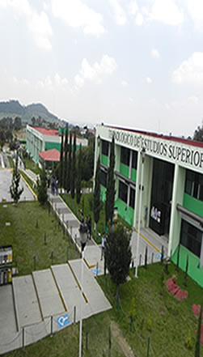

TESI :: DIVISIÓN DE INGENIERÍA INFORMÁTICA IINF-2010-220
OBJETIVO
Formar profesionales competentes en el diseño, desarrollo, implementación y administración de servicios informáticos y gestión de proyectos con una visión sistémica, tecnológica y estratégica, ofreciendo soluciones innovadoras e integrales a las organizaciones, de acuerdo con las necesidades globales, actuales y emergentes, comprometidos con su entorno, desempeñándose con actitud ética, emprendedora y de liderazgo.
PERFIL DE EGRESO
- 1.- Aplicar conocimientos científicos y tecnológicos en la solución de problemas en el área informática con un enfoque interdisciplinario.
- 2.- Administrar las tecnologías de la información, para estructurar proyectos estratégicos.
- 3.- Formular, gestionar y evaluar el desarrollo de proyectos informáticos en las organizaciones.
- 4.- Analizar, modelar, desarrollar, implementar y administrar sistemas de información para aumentar la productividad y competitividad de las organizaciones.
- 5.- Aplicar normas, marcos de referencia, estándares de calidad y seguridad vigentes en el ámbito del desarrollo y gestión de tecnologías y sistemas de información.
- 6.- Integrar las soluciones de tecnologías de información a los procesos organizacionales para fortalecer objetivos estratégicos.
- 7.- Seleccionar y utilizar de manera óptima técnicas y herramientas computacionales actuales y emergentes.
- 8.- Realizar actividades de auditoria y consultoría relacionadas con la función informática.
- 9.- Identificar, diseñar, desarrollar los mecanismos de almacenamiento, distribución, visualización y manipulación de la información.
- 10.- Identificar y aplicar modelos pertinentes en el diseño e implementación de base de datos para la gestión de la información en las organizaciones.
- 11.- Comunicarse de manera efectiva, en su propio idioma y al menos en un idioma extranjero, para integrarse a un contexto globalizado, en su desarrollo personal y profesional.
- 12.- Crear y administrar redes de comunicación, que contemplen el diseño, selección, instalación y mantenimiento para la operación de equipos de cómputo, aprovechando los avances tecnológicos a su alcance.
- 13.- Desempeñarse profesionalmente con ética en un contexto multicultural, comprometidos con la sociedad y conservación del medio ambiente.
- 14.- Observar y fomentar el cumplimiento de las disposiciones de carácter legal, relacionadas con la función informática.
- 15.- Analizar, desarrollar y programar modelos matemáticos, estadísticos y de simulación.
- 16.- Liderar y participar en grupos de trabajo profesional multi e interdisciplinario, para el desarrollo de proyectos que requieran soluciones basadas en tecnologías y sistemas de información.
- 17.- Lograr un nivel de competencia internacional, con espíritu innovador, creativo y emprendedor, para generar nuevas oportunidades y desarrollar proyectos aplicando las tecnologías de información.